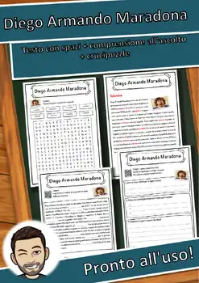
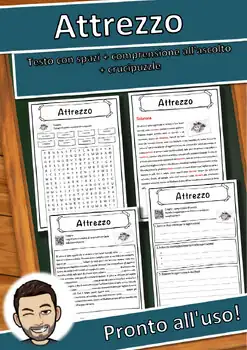
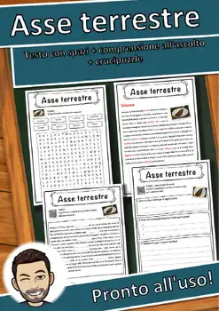
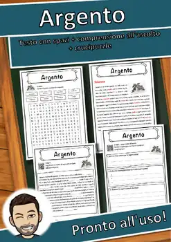
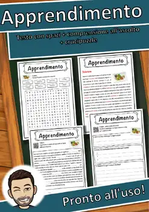
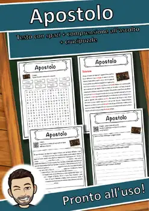
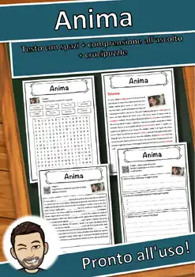
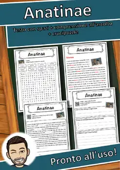

Diego Armando Maradona – Italian Reading: Cloze, Listening & Word Search
Q&A
Thumbnail
1
Thumbnail
2
Thumbnail
3
Thumbnail
4
View Preview
Share
Description
Diego Armando Maradona – Italian reading comprehension worksheet (scheda) with cloze text, listening task and word search (5 pages, answer keys included). Entirely in Italian.
From the text: "Diego Armando Maradona è stato uno dei calciatori più famosi e amati di tutti i tempi, nato in Argentina nel 1960 e scomparso nel 2020."
What's included:
- Page 1: Informational text about Diego Armando Maradona in Italian as a cloze text with a word bank (8 gaps)
- Page 2: Answer key for the cloze text
- Page 3: Listening comprehension – scan the QR code to play the Italian audio recording of the text (free MP3, no login), then write a title, note three facts and summarise the recording in two sentences
- Page 4: Word search with the 8 key words
- Page 5: Answer key for the word search
The Italian text is written in clear, simple language (approx. CEFR A2–B1): ideal for Italian class in grades 7–12, sub plans, homework or early finishers. No prep: print and go. Black-and-white, photocopy-friendly.
⭐ Did this resource work well in your classroom? Please leave a quick review on TPT – you earn TPT credits for future purchases, and it helps me a lot! Click "Follow" on my store page to be the first to hear about new freebies.
U.S. STANDARDS (alignment):
- ACTFL World-Readiness Standards: Interpretive Communication; ACTFL Cultures (Relating Cultural Practices/Products to Perspectives); ACTFL Connections (Acquiring Information and Diverse Perspectives)
- Frameworks: ACTFL World-Readiness Standards for Learning Languages
- Also supports the state standards of non-CCSS states, e.g. Texas TEKS (Languages Other Than English, §114); Florida World Languages Standards; Virginia World Language SOL; Indiana World Language Standards; Oklahoma World Languages Standards; Georgia GSE Modern Languages – and the CCSS-based standards of all other U.S. states (please check the exact local code).
CURRICULUM LINKS (ITALY, U.S.)
- Italy – Indicazioni nazionali per il curricolo (2012; Nuovi scenari 2018), Italiano (scuola secondaria di primo grado): «Lettura», «Ascolto e parlato» (audio via QR code) and «Acquisizione ed espansione del lessico».
- U.S.: Italian as a world language – ACTFL World-Readiness Standards (Interpretive Commu
Similar resources

Attrezzo – Italian Reading: Cloze Text, Listening Task & Word Search (Scheda)

Asse terrestre – Italian Reading: Cloze, Listening & Word Search

Argento – Italian Reading: Cloze Text, Listening Task & Word Search (Scheda)

Apprendimento – Italian Reading: Cloze, Listening & Word Search

Apostolo – Italian Reading: Cloze Text, Listening Task & Word Search (Scheda)

Anima – Italian Reading: Cloze Text, Listening Task & Word Search (Scheda)
